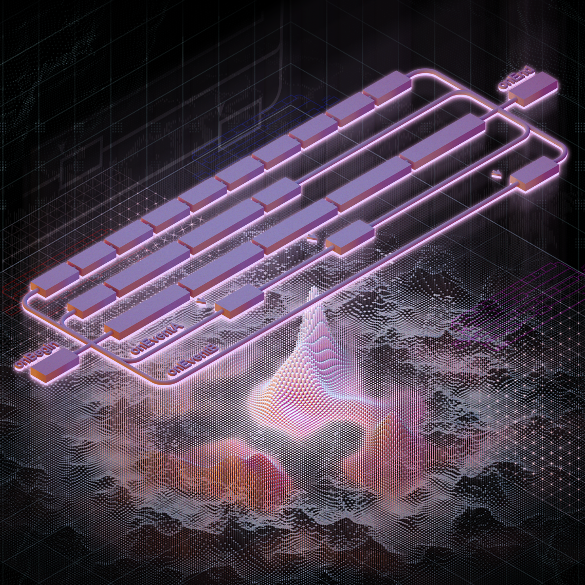
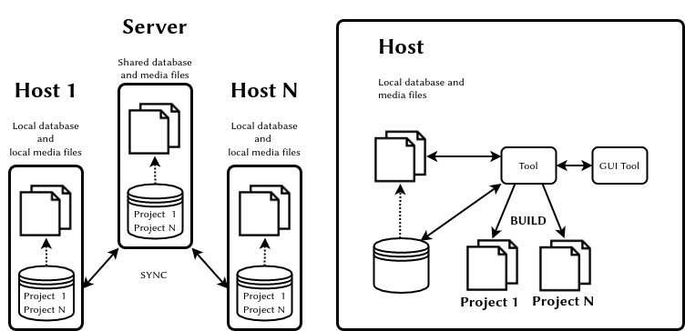
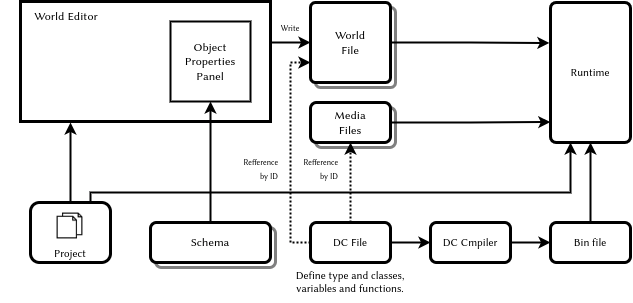
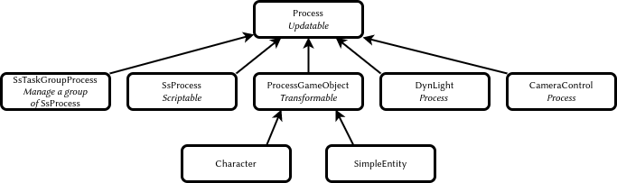
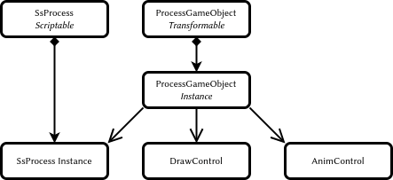
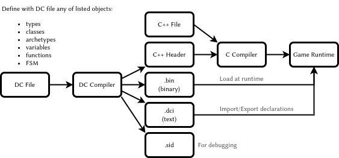
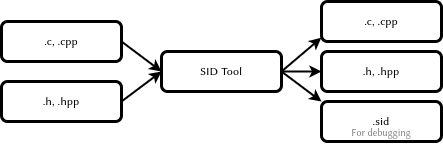
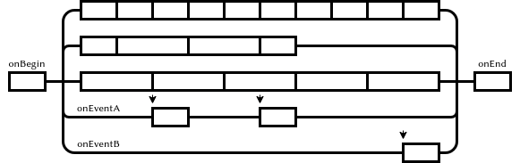
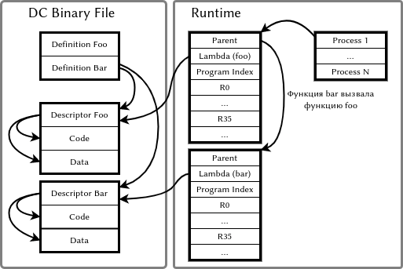

Программирование игрового процесса
На примере игры The Last of Us
Валерия Пудова
valery.hww@gmail.com
18.05.2022

\clearpage
Abstract
\begin{abstract} В документе кратко изложена базовая система игры \emph{Game Runtime Base Foundation System}, используемая в серии игр “The Last of Us”. Игры компании \emph{Naughty Dog} - это хороший пример сочетания принципов достаточности \emph{KIS} и гибкости \emph{Customization}. Информация в файле - результат беглого \emph{reverse engineering}, поэтому может содержать не полную и не точную информацию, но ее, в целом, достаточно чтобы понять суть предложенного метода. \end{abstract}Keywords \keywords{Object System, Runtime, Scripting, Finite State Machines}
\clearpage
Отказ от ответственности
Я не работаю в \emph{Naughty Dog}, и не владею секретами компании или секретами \emph{Last Of Us}, я делюсь теми своими знаниями которые получила сама, исследуя саму игру и читая информацию в интернете и книгах. Фрагменты приведенного кода доступны в различных источниках на которые я ссылаюсь в конце документа.
Disclaimer
I don’t work at \emph{Naughty Dog}, nor do I have any secret knowledge of \emph{The Last of Us}, except what I figured out myself from the disc. So a lot of this may well be wrong. Take it with a pinch of salt. Most of the code samples in this document are taken from the sources listed at the end of the document.
\clearpage
Table of Contents
- 1. Введение
- 2. Управление ассетами
- 3. Редактор мира
- 4. Объектная система игры
- 5. Spawning
- 6. Сигналы и сообщения
- 7. State Update
- 8. Идентификаторы объектов
- 9. Синтаксис DC
- 10. Анимационные состояния
- 11. Конечные автоматы
- 12. Объявление переменных состояния
- 13. Параллельное исполнение процессов
- 14. Интеграция VM в Engine
- 15. DC компилятор
- 16. Формат SID-файла
- 17. Формат DCI-файла
- 18. Формат бинарного DC-файла
- 19. Виртуальная машина
- 20. Система команд VM
- 21. Результат
- 22. В завершение
\clearpage
1. Введение
В компании \emph{Naughty Dog} \emph{(ND)} используется набор инструментов разработчика, состоящий из множества различных утилит. Некоторые эти утилиты имеют собственный \emph{GUI}, тогда как другие остаются в виде команд для консоли \citep{jgregory2014}. Такой подход имеет определенные преимущества в сравнении с интегрированными средами разработки (\emph{IDE}) игр, таких как Unity 3D.
- Требуется меньше затрат на разработку \emph{GUI}, поэтому больше ресурсов можно потратить на саму игру
- Проще организовать совместную работу команды в целом
- Утилиты по отдельности требуют меньше ресурсов \emph{ПК}. И поэтому они более удобны для выполнения конкретной задачи: \emph{World},\emph{FX}, \emph{Shaders}, редакторы и т.д.
- С таким подходом легче организовать автоматизацию производства
- Инструменты работают не деструктивно: если дизайнер ничего не менял, то и проект остается неизменным
Основная особенность \emph{ND} подхода основана на использовании анимаций и динамическом обновлении окружения среды исполнения — не требуется перекомпиляция и перезапуск проекта чтобы увидеть результат.
\clearpage
2. Управление ассетами
Система управления \emph{ассетами} — предназначена для организации совместной работы над проектом, отслеживания различных версий исходных файлов1, устранения конфликтных ситуаций, а также для генерации актуального состояния всех медиа ресурсов проекта и сохранения рузультата в оптимальной для поковой загрузки форме. Эта система основана на распределенной базе данных, которая реализована с использованием СУБД или \emph{xml} файлов2. База данных содержит информацию о всех входных медиа-ресурсах и позволяет создать папку ассетов проекта и наполнить её контентом. Каждая запись содержит не только параметры импорта, но и дополнительную информацию, например, комментарии. Для разрешения конфликтов для каждого файла сохраняется история действий над ним: переименование, перемещение, удаление и т.д.

Figure 1: Управление ассетами
Не стоит пренебрегать системой управления ассетами: от нее зависит очень много, так как создание игр — это в большей степени работа с ассетами, нежели программирование.
\clearpage
3. Редактор мира
Редактор никак не связан с самим движком и это является преимуществом3. Он использует текстовые конфигурационные файлы \emph{schema}. Каждый файл содержит описание параметров для одного типа объектов сцены. Для каждого поля декларируются тип, значение по умолчанию, минимальное и максимальное значения, возможные значения для перечисляемых типов. Поставив пустой объект на сцену, дизайнер выбирает какую схему использует этот объект. После этого дизайнер может заполнять поля, так как список полей описан в файле схемы. Дизайнер имеет возможность самостоятельно добавлять или удалять поля в файл \emph{schema}. В конечном итоге, редактор мира запишет структуру всей сцены, например, в виде \emph{xml} или другого формата файла. Подход в целом иллюстрирован на рисунке 2

Figure 2: Редактор мира и файл \emph{schema}
Существуют следующие типы \citep{jgregory2017} объектов сцены:
- \emph{Spawner} — Процесс, производящий инстанциирование персонажа
- \emph{Spline} — 3D кривая
- \emph{Region} — Фрагмент мира
- \emph{Nav Mesh} — Навигационная геометрия (сетка навигации)
- \emph{Static Background Geometry} — геометрия статического фона
В параметрах объекта могут присутствовать такие поля как \emph{archetype}, а иногда и \emph{parent-archetype}. Эти параметры определяют то, какой объект на самом деле будет использован, какие компоненты он имеет и какие у них поля.
\clearpage
4. Объектная система игры
Иерархия классов изображена на рисунке ниже. Она не имеет глубокой вложенности и построена от одного класса-предка. Теоретически система могла быть реализована как динамическая компонентная система\citep{tcohen2010} или другом варианте \emph{Data Oriented} программирования. Приблизительная структура классов изображена на диаграмме 3

Figure 3: Структура классов низкого уровня \citep{jgregory2006}
Базовый класс всех персонажей \emph{ProcessGameObject} и классы от него унаследованные, представляют собой хост-объект, функционал которого расширяется с помощью композиции, смотри рисунок 4. При использовании \emph{MVC} можно создать два отдельных класса, каждый со своим набором параметров состояния и со своим набором компонентов.

Figure 4: Композиция игровых объектов \citep{jgregory2006}
Объектная система игры основана на \emph{LISP}-подобном языке, на котором описываются структуры, классы, экземпляры классов вместе с хранимыми в них данными, а также переменные и функции. Этот файл компилируется в файлы \emph{.h}, \emph{.bin} и \emph{.dci}. Кроме всего перечисленного, \emph{DC}-файл содержит код машин состояний игровых объектов. Этот код организован как множество параллельных процессов, работающих в условиях кооперативной многозадачности. У процессов имеется механизм синхронизации, основанный на сигналах.
- \emph{.h} — предназначен для сборки \emph{С} компилятором и обеспечивает прямое использование динамических данных бинарным кодом
- \emph{.bin} — содержит только данные структур и функции. Загружается игрой в среду исполнения
- \emph{.dci} — текстовый файл с декларацией \emph{import}-файлов и \emph{export}-дефиниций
Изменение \emph{DC}-файла требует перекомпиляции проекта только если изменилась структура, то есть был изменен \emph{.h}-файл. Принцип работы системы изображен на рисунке 5.

Figure 5: Редактирование модели мира \citep{jgregory2017}
\clearpage
5. Spawning
Основа гибкого создания новых экземпляров игровых сущностей — \emph{spawning} — это использование скрипт-процессов. Такие процессы делают всю необходимую работу по созданию объектов, а затем производят инъекцию нужных данных. Система \emph{spawning} использует \emph{фабрику объектов}, которая имеет таблицу имен типов и архетипов и хранит информацию о наследовании и размере классов. Также система должна уметь перемещать объекты для эффективного использования памяти.
Система может запрашивать максимальный объём памяти, необходимый для хранения объекта, а после инстанциирования освобождать неиспользованный фрагмент памяти. После релоцирования, все объекты в памяти должны располагаться оптимальным образом.
Более качественный результат может дать \emph{Data Oriented} подход, который использует пулы (pools) гомогенных объектов.
В целом, \emph{spawning}-система должна решать следующие проблемы:
- Следить за уникальностью идентификаторов
- Создавать всю необходимую иерархию объектов
- Настраивать все необходимые зависимости
- Эффективно использовать память
- Бережно использовать ресурсы процессора. Например, создавать объект за несколько шагов: запрос, создание, инициализация, запрос создания дочерних и т.д.
- Уметь использовать при создании объектов очередь с приоритетами \emph{priority queue}
- Позволять создавать объекты различными способами:
- \emph{Spawner} — объектом в мире с параметрами инъекции
- \emph{C} — кодом с аргументами инъекции
- \emph{Script} — кодом с аргументами инъекции
- \emph{Cloning} — копированием объекта
- \emph{Replication} — копированием по сети
\clearpage
6. Сигналы и сообщения
Цель программиста создавать код с минимумом зависимостей. Два взаимодействующих объекта не должны знать друг о друге слишком много. Вместо этого, используя полиморфизм, они должны говорить друг с другом на абстрактном языке сообщений. Для этого хорошо подходят контейнеры данных, где для ключей \emph{key} имеется запись данных \emph{value} типа \emph{variant}. При этом, в качестве указателей на объекты лучше использовать имена \emph{StringId} или идентификаторы \emph{Handler}.
\clearpage
7. State Update
Обновление всех объектов происходит через \emph{batched}- и \emph{bucket}-метод.
- \emph{batched} — обновление всех компонентов одного типа \emph{Data Oriented Programming}
- \emph{bucket} — обновление объектов по приоритетам, для устранения проблемы взаимозависимости
Ниже приведен пример \emph{batched} и \emph{backed} обновления \citep{jgregory2017}.
while (true) { PollJoypad(); float dt = GetFrameDeltaTime(); // Backed update game objects for (each bucket) { for (each gameObject in bucket) { gameObject.Update(dt); } } // Batched update components g_animationEngine.Update(dt); g_physicsEngine.Simulate(dt); g_collisionEngine.Run(dt); g_audioEngine.Update(dt); g_renderingEngine.RenderFrame(); g_videoDriver.FlipBuffers(); }
Обновление по фазам устраняет проблемы взаимозависимости. Суть решения в том, чтобы обновлять объекты не за один, а за несколько проходов. В своих проектах я использую именно такой способ обновления объектов. Смотри пример ниже \citep{jgregory2017}. В принципе, количество фаз может быть любым, но в моей практике использовались только две.
while (true) // main game loop { // ... for (each gameObject) gameObject.PreAnimUpdate(dt); g_animationEngine.CalculateIntermediatePoses(dt); for (each gameObject) gameObject.PostAnimUpdate(dt); g_ragdollSystem.ApplySkeletonsToRagDolls(); g_physicsEngine.Simulate(dt); g_collisionEngine.DetectAndResolveCollisions(dt); g_ragdollSystem.ApplyRagDollsToSkeletons(); g_animationEngine.FinalizePoseAndMatrixPalette(); for (each gameObject) gameObject.FinalUpdate(dt); // ... }
То, как необходимо обновлять объекты, в большой степени зависит от самой игры. И решение должно приниматься в каждом конкретном случае, для каждого конкретного проекта.
\clearpage
8. Идентификаторы объектов
Все имена объектов трансформируются в целочисленные значения (\emph{integer}) с помощью алгоритма \emph{CRC32}. В исходном коде на \emph{С} используется макрос \emph{SID(s)}, который перед компиляцией конвертируется в \emph{SID(n, s)}. Идентификаторы всех строк собираются в отдельном текстовом \emph{.sid}-файле для отладки. Пример макроса в исходном \emph{С}-файле приведен ниже.
#define SID(n,...) n
В результате во время компиляции исходные строки полностью отбрасываются, но попадают в \emph{.sid}-файл. Сгенерированные \emph{.cpp|.h}-файлы имеют ссылку на оригинальный файл. Пример такой ссылки показан ниже.
#line 1 "original_file.cpp"
В целом процесс выглядит так, как показано на диаграмме 6.

Figure 6: Обработка \emph{C} файлов перед компиляцией
Современная версия \emp{C} позволяет использовать для этой цели \emph{constexpr} для генерации \emph{StringId}. Пример такой функции приведен ниже:
// Usage: find_character("player"_id) constexpr StringId operator "" _id(const char* v, unsigned int c) { return crc32_helper(v, c, 0xFFFFFFFF); }
\FloatBarrier
Пример генератора \emph{StringId} приведен ниже. Эта фунция работает в коде дизассемблера \emph{.bin}-файлов игры.
# Python def create_table(poly): init=0 l=[0]*256 for i in range(256): t=init^(i<<24) for j in range(8): mask=1<<31 if(mask&t!=0): t=(t<<1)^poly else: t=(t<<1) l[i]=t&0xffffffff return l crc32_table = create_table(0x04c11db7) def crc32(s, init=0): crc = init if s: for c in s: crc = (crc32_table[ ((crc>>24) ^ ord(c)) & 0xff ] \ ^ (crc << 8)) & 0xffffffff return crc
\clearpage
9. Синтаксис DC
Язык позволяет декларировать новые типы, ниже приведен пример четырехкомпонентного вектора \citep{dliebdold2008}.
(deftype vec4 (:align 16) ((x float) (y float) (z float) (w float :default 0) ) )
При декларировании можно использовать наследование. Примеры такого наследования приведены ниже \citep{dliebdold2008}.
(deftype quaternion (:parent vec4) ()) (deftype point (:parent vec4) ((w float :default 1) ))
Еще один пример, но теперь композиции классов \citep{dliebdold2008}.
(deftype locator () ((trans point :inline #t) (rot quaternion :inline #t) ) )
В результате, \emph{DC}-компилятор преобразует структуру в содержимое \emph{.h}-файла \citep{dliebdold2008}.
struct Locator { Point m_trans; Quaternion m_rot; };
Декларировать можно не только типы, но и функции. Ниже приведен пример функции \emph{axis-angle->quat} \citep{dliebdold2008}.
(define (axis-angle->quat axis angle) (let ((sin-angle/2 (sin (* 0.5 angle)))) (new quaternion :x (* (-> axis x) sin-angle/2) :y (* (-> axis y) sin-angle/2) :z (* (-> axis z) sin-angle/2) :w (cos (* 0.5 angle)) )))
Одна из важных особенностей \emph{LISP}-подобного языка — это возможность создания предметно-ориентированных языков \emph{DSL}. Это позволяет писать код и декларировать данные более компактно, без лишних церемоний \citep{dliebdold2008}.
(define *y-axis* (new vec4 :x 0 :y 1 :z 0)) (define *origin* (new point :x 0 :y 0 :z 0))
При этом, объявления данных могут использовать функции. Пример определения стартовой точки игрока показан ниже. Здесь в качестве значения угла поворота используется функция, вычисляющая \emph{quaternion} из \emph{угла} и \emph{оси вращения} \citep{dliebdold2008}.
(define-export *player-start* (new locator :trans *origin* :rot (axis-angle->quaternion *y-axis* 45) ))
Использование дефиниций в \emph{DC} файле из \emph{C} исходного кода выглядит как на примере ниже \citep{jgregory2014}.
#include "dc-types.h" const Locator * pLoc = DcLookupSymbol("*player-start*"); Point pos = pLoc->m_trans;
\clearpage
10. Анимационные состояния
Анимационные состояния реализуются как структуры данных. Требуется наличие соответствующего \emph{С}-кода для того, чтобы интерпретировать эти состояния и произвести конструирование необходимых объектов в памяти системы. Ниже приведено простое анимационное состояние \emph{pirate-jump} \citep{jgregory2017}.
(define-state simple :name "pirate-jump" :clip "pirate-jump" :flags (anim-state-flag no-adjust-to-ground) )
Пример состояния сложной анимации приведен ниже \citep{jgregory2017}. В данном случае производится линейная интерполяция двух анимаций: \emph{pirate-jump} и \emph{pirate-scare}.
(define-state complex :name "pirate-jump" :tree (anim-node-lerp (anim-node-clip "pirate-jump") (anim-node-clip "pirate-scare") ) )
Еще один пример приведен ниже, в нем присутсвует дерево различных узлов (node), которые производят операции смешивания анимаций \citep{jgregory2017}.
(define-state complex :name "pirate-jump" :tree (anim-node-lerp (anim-node-additive (anim-node-additive (anim-node-clip "pirate-jump-f") (anim-node-clip "pirate-scare-f") ) (anim-node-clip "pirate-felldown-f") ) (anim-node-additive (anim-node-additive (anim-node-clip "pirate-jump-b") (anim-node-clip "pirate-scare-b") ) (anim-node-clip "pirate-felldown-b") ) ) )
Описание анимационных переходов между состояниями приведена ниже \citep{jgregory2017}.
;; nb aim-tree is the macro definition (define-state complex :name "s-turret-idle" :tree (aim-tree (anim-node-clip "turret-aim-all-base") "turret-aim-all-left-right" "turret-aim-all-left-updown") :transitions ( (transition "reload" "s_turret-reload" (range - -) :fade-time 0.2) (transition "step-left" "s_turret-step-left" (range - -) :fade-time 0.2) (transition "step-right" "s_turret-ste-right" (range - -) :fade-time 0.2) (transition "reload" "s_turret-fire" (range - -) :fade-time 0.1) ;; invoke previously defined group of transitions ;; it is used when the same set of transitions needed ;; to be used in the other state (transition-group "combat-gunpout-idle-mode") ;; specifies a transition that is ;; taken upon reaching the end of the state's ;; local time line if no other transition ;; has been taken before then (transition-end "s-turret-idle") ) )
Подобным образом можно кодировать и другие системы игры например \emph{AI}, \emph{Melee} \citep{minglun2021}, и другие.
\clearpage
11. Конечные автоматы
В компании \emph{ND} под состоянием понимается определенный набор процессов, которые выполняются для конкретного хост-объекта или как самостоятельные процессы в памяти \citep{jgregory2006}. Пример конечного автомата \citep{jgregory2006} анимированной сцены показан ниже.
;; Сцена с аварией автобуса (define-state-script ("wz-bus-crash") ;; состояние spawn солдат (state ("spawn-soldiers") (on (begin) ;; отключить управление игроком, но кроме правой кнопки [player-disable-controls (controls all-but-right-stick)] ;; создать солдат [spawn-npc-in-combat "npc-wz-52"] [spawn-npc-in-combat "npc-wz-53"] ... ;; перейти в состояние crash [go "crash"] ) ) ...
12. Объявление переменных состояния
Состояние может иметь собственные переменные для сохнанения различных значений или обмена данными.
;; Сцена с аварией автобуса (define-state-script ("kickable-gate") :initial-state "closed" :declarations (decl-list (var "num-attempts" :type int32) (var "is-locked" ::default #t))) .... )
13. Параллельное исполнение процессов
Каждое состояние объекта можно представить как множество параллельных треков. Некоторые из которых выполняются от начала до конца в каждом кадре, а другие приостанавливаются и продолжают выполнение в ответ на определенное событие. Существуют еще и отдельные треки, которые запускаются по событию. В начале исполняется код инициализации, а в конце — код финализации. Диаграмма 7 иллюстрирует одно состояние.

Figure 7: Треки одного состояния
\FloatBarrier
Следующее состояние \citep{jgregory2006} запускает четыре трека, то есть четыре параллельных процесса. Каждый процесс отрабатывает свой сценарий и отправляет сообщение в финале. Каждый процесс может приостанавливаться в ожидании другого процесса или в ожидании определенного сценария.
(state ("crash") (on (begin) ;; процесс анимации автобуса (track ("bus") [wait-animate "bus-1" "bus-crash" [get-locator "ref-bus-crash-1"]] [signal "bus-done"] ) ;; процесс анимации игрока (track ("player") [animate "player" "player-watch-crash" [get-locator "ref-bus-crash-1"]] [wait-until-frame 250] [say "player" "vox-wz-drk-01-what-the"] [signal "drake-done"] ) ;; процесс анимации того, кого собъет автобус (track ("guy-hit-by-bus") [wait-animate "npc-wz-52" "npc-hit-by-bus" [get-locator "ref-bus-crash-1"]] [npc-die "npc-wz-52"] [signal "npc-dead"] ) ;; процесс ожидания всех остальных процессов (track ("wait-for-all-done") [wait-for-signal "bus-done"] [wait-for-signal "drake-done"] [wait-for-signal "npc-dead"] [go "done"] ) ...
В конечном итоге, система треков многослойна, при этом верхние уровни контролируют нижние. Примеры уровней от верхнего к нижнему приведены ниже:
- Процессы верхнего уровня игры, а также глобальные процессы, например, смена дня и ночи
- Процессы текущего мира
- Процессы текущей зоны
- Процессы батл-зоны
- Процессы группового интеллекта
- Процессы персонажей
- Процессы дочерних объектов
Этот подход весьма элегантный и простой, в котором есть некоторые недостатки, например:
- Дизайнеры должны уметь программировать на языке скриптов
- Процесс исполнения кода в треках не зависит от времени, то есть не может исполняться в обратном порядке или совершать скачки во времени.
Впрочем, последнее бывает возможно в \emph{Data-Driven} системах.
\clearpage
14. Интеграция VM в Engine
Исходный код \emph{DC}-файлов компилируется в байткод. Более детально этот аспект будет затронут ниже. При любом способе интеграции динамического языка в систему, требуется механизм этой интеграции \emph{Reflection}, \emph{FFI}, и т.д.
В компании \emph{ND} применен очень простой, но весьма эффективный способ интеграции виртуальной машины и самого движка. Для этого используется хэш-таблица, в которой к каждому ключу \emph{ssid} имеется указатель на \emph{C}-функцию. Это функция с переменным числом аргументов, которые при этом имеют \emph{variant}-тип. Количество возможных типов аргументов весьма невелико: \emph{integer}, \emph{float}, \emph{StringId}, \emph{Pointer}.
Пример такой функции приведен ниже \citep{jgregory2006}. Для доступа к объектам сцены используются имена объектов в виде \emph{StringId}, при этом, зарезервированное имя \emph{self} адресует хост-объект процесса.
Variant ScriptWaitAnimate(int argc, Variant* argv) { StringId objName = SC_ARG(0,StringId, NULL); StringId animName = SC_ARG(1,StringId, NULL); if(!objName) // The ScriptError is a function return Variant(false) // And print the error message return ScriptError( "wait-animate: expected object name (arg1)\n"); if(!animName) return ScriptError( "wait-animate: expect animation name (arg2)\n"); // find the object ProcessGameObject* pObj = g_processMgr.Lookup(objName); if(!pObj) return ScriptError("wait-animate: could not found %s\n", StringIdToString(onjName)); // insruct object to play animation, and wakeup // this script when done pObj->WaitAnimate(animName, g_scriptContext); g_scriptContext.Suspend(); // go to sleep until animation complete return Variant(true); }
Теперь \emph{C}-функцию \emph{ScriptWaitAnimate} можно декларировать в динамической среде программирования, смотри пример ниже \citep{jgregory2006}. Декларация нужна лишь для объявления сигнатуры метода, то есть для проверки типов.
(define-c-function wait-animate (object-name string) (anim-name string) )
\clearpage
15. DC компилятор
Реализован на \emph{Racket}, хотя мог быть реализован и на \emph{C}, \emph{Go} или любом другом языке. Использование \emph{Racket} может быть связано со следующими причинами:
- Это среда, специально нацеленная на разработку \emph{DSL}
- Компилятор Racket поддерживает большое количество уже реализованных для платформы языков, таких как \empth{Typed Racket}
- Это зрелый продукт, хорошо зарекомендовавший себя в академической среде
- У \emph{Racket} есть собственная \emph{IDE} — \emph{DrRacket}. Она проста в установке и использовании, и при этом предоставляемые ею средства весьма наглядны и информативны.
- Продвинутые программисты могут использовать другой редактор, например \emph{EMACS}
\clearpage
16. Формат SID-файла
Наличие такого файла — это мое предположение. Файл имеет текстовый формат и предназначен для хранения текстовых форм каждого \emph{StringId}. Это может быть полезно при отладке программ. Ниже приведен пример фрагмента этого файла.
dbd3d0d8 is-test-task? 2a990f91 is-demo-part-2? bff578ab is-t2? dcf596c6 get-difficulty a86d881d get-dda
\clearpage
17. Формат DCI-файла
Данный файл предназначен для линковки модулей. В каждом файле в текстовой форме приводятся все импортируемые файлы и экспортируемые определения. Теоретически, в режиме отладки, в файл могут быть помещены все текстовые формы.
;; script-user-funcs.dci (script-user-funcs (69857) ; ;; Import files (import script-funcs vox-defines vox-remap-defines fact-defines vox-action-defines) ;; Export symbols (export disable-relocation add-int32 subtract-int32 string) )
\clearpage
18. Формат бинарного DC-файла
Бинарный файл не документирован и ещё не полностью исследован, но некоторые выводы уже можно сделать. Формат файла очень прост и дружественнен для среды исполнения. Каждый файл начинается с 32 байт заголовка.
struct DcHeader { char magic[4] = "DC00"; // Магическая сигнатура u32 unknown1; u32 relocation1; u32 unknown2; u32 unknown3; u32 definitions_count; // Количество дефиниций в файле u32 definitions_offset; // Начало данных с дефинициями u32 unknown4; // PS4 version only }
Каждое определение имеет имя, тип и смещение от начала файла. Примечательно, что тип объекта записан в текстовой форме, конвертированной в \emph{StringId}.
class DcDefinition { u32 nameId; // SID aka StringId("player") u32 typeId; // SID aka StringId("lambda") u32 offset; // Start of the descriptor u32 unknown1; // PS4 version only }
Ниже перечислены, предположительно, основные типы определений.
vector = 0x012f77fe string = 0x0b3952e7 float = 0x0f182ec3 angle = 0x13812cd6 state = 0x2e6743e3 direction = 0x7194cbe7 color = 0x71e73c6c boolean = 0x8b4e76ff vec4 = 0x93bd2e95 script-lambda = 0x9ed499e1 function = 0xab3eb31f int32 = 0xc7cb2752
Исходный код транслируется в тип \emph{script-lambda} или \emph{function}. Дефиниция указывает на дескриптор. Дескриптор имеет указатель на блоки кода и данных \emph{lambda} функции.
struct DcDescriptor { u32 code; // Смещение начала кода u32 unknown1; u32 data; // Смещение начала данных u32 unknown2; }
\clearpage
19. Виртуальная машина
Виртуальная машина имеет список состояний процессов, в котором расположены указатели на блок памяти, хранящий \emph{окружение} (\emph{environment}). В окружении хранятся:
- Указатель на исполняемую \emph{lambda} функцию
- Индекс текущей инструкции
- Указатель на родительское окружение, если окружения не организованы в виде стека
- Блок регистров, каждый из которых имеет вариантный тип
Структура окружения \emph{VM} изображена на рисунке 8

Figure 8: Runtime виртуальной машины \citep{jgregory2006}
\clearpage
20. Система команд VM
Код состоит из гомогенных команд в виде массива из 32-х битных значений. Кроме кода операции, имеется три операнда \emph{a},\emph{b},\emph{c}. Для некоторых команд операнд \emph{c} используется как непосредственное значение \emph{k}, для других операнды \emph{b} и \emph{c} объединяются в 16-ти битное значение \emph{kk}.
struct DcInstruction { u8 opcode; // Opcode u8 a; // Register number u8 b; // Register number u8 c; // Register number }
Доступ к константам идет по адресу данных из дескриптора. Значение регистра, умноженное на N4 используется как смещение области данных, где хранятся:
- Целые числа \emph{I8,U8,I16,U16,I32,U32,I64,U64}. Однако, в исследованной мною игре использовались только \emph{I32} и \emph{U32}
- 32-битные числа с плавающей точкой
- Строки текста
В таблице ниже приведена система команд виртуальной машины. В колонке \emph{Q-ty} дается приблизительное количество использований команды в игре.
| Opcode | Name | Q-ty | Comment |
|---|---|---|---|
| 0x00 | return | 1412 | return aRes, b (allways equal a) |
| 0x01 | intAdd | 130 | a = b + c |
| 0x02 | intSub | 19 | a = b - c |
| 0x03 | intMul | 1 | a = b * c |
| 0x04 | intDiv | 0 | a = b / c |
| 0x05 | floatAdd | 32 | a = b + c |
| 0x06 | floatSub | 44 | a = b - c |
| 0x07 | floatMul | 68 | a = b * c |
| 0x08 | floatDiv | 30 | a = b / c |
| 0x09 | loadStaticInt | 0 | a = (int)data[kk*N] |
| 0x0A | loadStaticFloat | 0 | a = (float)data[kk*N] |
| 0x0B | loadStaticPointer | 0 | a = (char*)data[kk*N] |
| 0x0C | loadImm | 3577 | a = BC |
| 0x0D | loadInt | 78 | a = (int)*b |
| 0x0E | loadFloat | 129 | a = (float)*b |
| 0x0F | loadPointer | 2 | a = (pointer)*b |
| 0x10 | storeInt | 0 | (int*)a = b |
| 0x11 | storeFloat | 0 | (float*)a = b |
| 0x12 | storePointer | 0 | (char**)a = b |
| 0x13 | lookupInt | 0 | a = (int)lookup((sid)data[kk*N]) |
| 0x14 | lookupFloat | 0 | a = (float)lookuo((sid)data[kk*N]) |
| 0x15 | lookupPointer | 8313 | a = (char*)lookup((sid)data[kk*N]) |
| 0x16 | moveInt | 0 | a = b |
| 0x17 | moveFloat | 0 | a = b |
| 0x18 | movePointer | 0 | a = b |
| 0x19 | castInteger | 23 | a = (int)b |
| 0x1A | castFloat | 86 | a = (float)b |
| 0x1B | call | 1429 | Call script function(aArg, bRes, argc) |
| 0x1C | callFf | 6866 | Call native function(aArg, bRes, argc) |
| 0x1D | cmpEqual | 721 | a = b == c |
| 0x1E | cmpGt | 49 | a = b > c |
| 0x1F | cmpGtEqual | 20 | a = b >= c) |
\FloatBarrier
| Opcode | Name | Q-ty | Comment |
|---|---|---|---|
| 0x20 | cmpLt | 141 | a = b < c |
| 0x21 | cmpLtEqual | 16 | a = b <= c |
| 0x22 | cmpFloatEqual | 19 | a = b == c |
| 0x23 | cmpFloatGt | 108 | a = b > c |
| 0x24 | cmpFloatGtEqual | 31 | a = b >= c |
| 0x25 | cmpFloatLt | 153 | a = b < c |
| 0x26 | cmpFloatLtEqual | 44 | a = b <= c |
| 0x27 | intMod | 2 | a = mod(b) |
| 0x28 | floatMod | 0 | a = fmod(b) |
| 0x29 | intAbs | 0 | a = abs(b) |
| 0x2A | floatAbs | 18 | a = fabs(b) |
| 0x2B | (not available) | 0 | |
| 0x2C | (not available) | 0 | |
| 0x2D | branch | 844 | rjump kk |
| 0x2E | branchIf | 348 | if (a) rjmp kk |
| 0x2F | branchIfNot | 2063 | if (not a) rjmp kk |
| 0x30 | opLogNot | 417 | a = not b |
| 0x31 | opBitAnd | 1 | a = b band c |
| 0x32 | opBitNot | 0 | a = bnot(b) |
| 0x33 | opBitOr | 0 | a = b bor c |
| 0x34 | opBitXor | 0 | a = b bxor c |
| 0x35 | opBitNor | 0 | a = bont (b bor c) |
| 0x36 | opLogAnd | 0 | a = b and c |
| 0x37 | opLogOr | 0 | a = a or c |
| 0x38 | intNeg | 0 | a = -b |
| 0x39 | floatNeg | 0 | a = -b |
| 0x3A | loadParmCnt | 1 | a = argc |
| 0x3B | intAddImm | 158 | a = b + k |
| 0x3C | intSubImm | 0 | a = b - k |
| 0x3D | intMulImm | 0 | a = b * k |
| 0x3E | intDivImm | 0 | a = b / k |
| 0x3F | loadStaticI32Imm | 7128 | a = (i32)data[kk*N]) |
\FloatBarrier
| Opcode | Name | Q-ty | Comment |
|---|---|---|---|
| 0x40 | loadStaticFloat | 1699 | a = (float)data[kk*N]) |
| 0x41 | loadStaticPointer | 558 | a = (char*)&data[data[kk*N]] |
| 0x42 | intAsh | 0 | a shift b bits left/right |
| 0x43 | move | 27681 | a = b |
| 0x44 | loadStaticU32 | 0 | a = (u32)data[kk*N]) |
| 0x45 | loadStaticI8 | 0 | a = (i8)data[kk*N]) |
| 0x46 | loadStaticU8 | 0 | a = (u8)data[kk*N]) |
| 0x47 | loadStaticI16 | 0 | a = (i16)data[kk*N]) |
| 0x48 | loadStaticU16 | 0 | a = (u16)data[kk*N]) |
| 0x49 | loadStaticI64 | 0 | a = (i64)data[kk*N]) |
| 0x4A | loadStaticU64 | 0 | a = (u64)data[kk*N]) |
\FloatBarrier
\clearpage
20.1. Использование регистров и констант
Приведу несколько примеров. В игре \emph{The Last of Us} не было ни одного доступа к регистру, большему чем \emph{R34}. При этом, регистры \emph{R24} и выше использовались, как правило, для передачи аргументов.
Код функции \emph{npc-smart-move-to} выглядит так:
npc-smart-move-to: ; Get 4 arguments move r0, r24 ; r0 = r24 move r1, r25 ; r1 = r25 move r2, r26 ; r2 = r26 move r3, r27 ; r3 = r27 ; Find object reference lockupPointer r4, data[0] ; r4 = StringId(0xa93d2926) move r5, r1 ; r5 = r1 ; Set arguments move r24, r5 ; r24 = r5 ; Call function callFf r4,r4,1 ; Use the result of functo branchIfNot r4, 0x00001770 ; ix00001770
\FloatBarrier
Ниже приведен исходный код функции \emph{vector-scale}. Можно заметить, что компилятор не имеет средств для качественной оптимизации. Но это не является большой проблемой, так как игра имеет хорошую архитектуру и четкое разделение между процессами высокой интенсивности и логикой игры, выполненной на \emph{VM}.
vector-scale(scalar, vector*) move r0, r24 ; r0 = r24 = scalar value move r1, r25 ; r1 = r25 = vector pointer ; Get native function pointer lookupPointer r2, data[0] ; r2 = StringId(0xcd4b9c1b) ; Scale X move r3, r0 ; r3 = r0 move r4, r1 ; r4 = r1 = &vector.x loadFloat r4, (r4) ; r4 = *r4 = vector.x floatMul r3, r3, r4 ; r3 = r3 * r4 = x * scale ; Scale Y move r4, r0 ; r4 = r0 = scalar move r5, r1 ; r5 = r1 = &vector intAddImm r5, r5, 0x04; r5 = r5 + 4 = &vector.y loadFloat r5, (r5) ; r5 = *r5 = vector.y floatMul r4, r4, r5 ; r4 = r4 * r5 = y * scale ; Scale Z move r5, r0 ; r5 = r0 = scalar move r6, r1 ; r6 = r1 = &vector intAddImm r6, r6, 0x08; r6 = r6 + 8 = &vector.z loadFloat r6, (r6) ; r6 = *r6 = vector.z floatMul r5, r5, r6 ; r5 = r5 * r6 = vector.z * scale loadStaticFloat r6, data[1] ; r6 = 1 ; Call function with 4 values move r24, r3 ; r24 = r3 = x move r25, r4 ; r25 = r4 = y move r26, r5 ; r26 = r5 = z move r27, r6 ; r27 = r6 = w = 1 callFf r2, r2, 4 ; function(x,y,z,w) return r2, r2
\FloatBarrier
Передача сообщения объекту присутствует в коде ниже.
kill-rigid-body(x,y) move r0, r24 ; r0 = r24 move r1, r25 ; r1 = r25 lookup r2, data[0] ; r2 = StringId(NATIVE:send-event) loadStaticI32Imm r3, data[1]; r3 = 274190794 (0x1057d1ca) move r4, r0 ; r4 = r0 loadImm r5, 0x0004 ; r5 = 4 move r6, r1 ; r6 = r1 move r24, r3 ; r24 = r3 move r25, r4 ; r25 = r4 move r26, r5 ; r26 = r5 move r27, r6 ; r27 = r6 callFf r2, r2, 4 ; send-event(264190794,x,4,y) return r2,r2
\FloatBarrier
Набор допустимых типов \emph{variant} контейнера не включает \emph{StringId} вместо этого используется \emph{integer} значение. Это можно видеть на примере ниже.
cloth-remove-external-collider(arg) move r0, r24 ; r0 = r24 lookupPointer r1, data[0] ; r1 = StringId(send-event) ; Load string id 'cloth-remove-external-collider' ; as integer 32 bits constant 1119424146 loadStaticI32Imm r2, data[1] ; r2 = 1119424146 move r3, r0 ; r3 = r0 move r24, r2 ; r24 = r2 move r25, r3 ; r25 = r3 ; callFf(sid(cloth-remove-external-collider), arg) callFf r1, r1, 2 return r1, r1
Типы данных размер которых превышает \emph{variant} контейнер передаются как указатель на объект или как хэндрер объекта в пуле.
\clearpage
21. Результат
Безусловно, данное введение не велико и многое упрощает, описывая лишь базу игровой системы и пайплайна в целом. Однако, из этого описания можно составить представление о наиболее важных решениях:
- Избегать проектирования инструментов с перегруженным GUI, лучше использовать потратить силы на саму игру
- Распределенная система управления ассетами должна быть пригодна для совместной работы и должна поддерживать множество проектов и их вариантов
- Ядро игры должно быть производительным, а инструменты дизайнера — гибкими
- Использование \emph{LISP}-подобных языков позволяет удобно описывать данные и код в одном файле
Весь игровой процесс состоит из тысяч параллельных процессов, каждый из которых подобен сценарию фильма. Я наблюдала, что в коде присутсвуют функции, код которых занимает несколько экранов.
В целом, большинство упомянутых подходов, применимо и к другим средам разработки игр, таким как \emph{Unity 3D} и \emph{Unreal Engine}. У меня есть завершенные коммерческие проекты на \emph{Unity 3D}, сделанные с использованием принципов, изложенных в этом документе. Я оцениваю этот результат как весьма успешный.
\clearpage
22. В завершение
Стоит сказать, что проект \emph{The Last of Us on the Playstation 3} потребовал следующих ресурсов:
- 16 программистов
- из них лишь два \emph{tool} программиста
- 20 дизайнеров
- 120 аниматоров
- 6000 DC файлов
- 120 Мб суммарный объём DC-исходных файлов
- 45 Мб суммареный объём DC-бинарных файлов
- Динамически загружаемые в пространство 5 Мб в области хипа